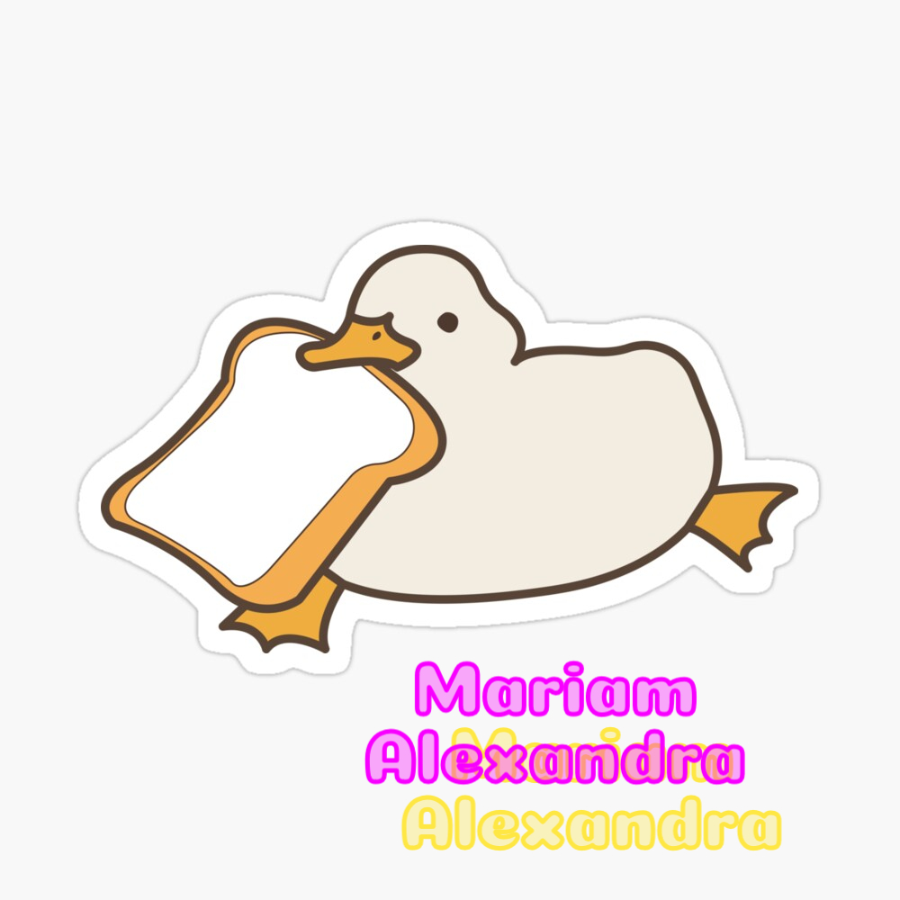

La poesía digital en nuestro tiempo es una vertiente muy extraña, se utiliza las redes sociales para compartir emociones y expresiones, casi siempre acompañadas de imágenes que nos podría parecer a veces extraño, otras veces coherente y en otras ocasiones fuera de contexto, pero que comparten un sentido emocional e importante para el creador de dicha obra intelectual.
Voces desde el Polvo acepta estas nuevas modalidades literarias, en el que el contenido digital (imágenes, videos, interacciones)
puedan convivir libremente con lo intelectual (palabras), esta sección Poesía Audaz son para aquellos que con valentía,
puedan publicar sus expresiones artísticas sin ningún límite de por medio y sin temor a ser juzgados por el canon literario de nuestra época.
